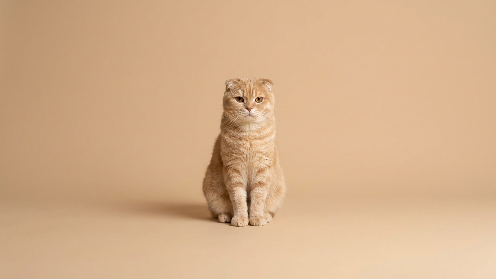

Круглая мордочка экзота, прижатые ушки шотландского фолда и темперамент кота, который переходит за вами из комнаты в комнату. Фолдекс — молодая канадская порода, о которой слышали немногие, и именно из-за сложенных ушей у неё есть нюанс здоровья, который решают ещё до покупки котёнка. Разбираем, что это за кот, как за ним ухаживать и какой вопрос обязателен заводчику.
🐾 У вас фолдекс?
AnimaLife соберёт уход под породу: к каким болезням есть склонность, что проверять по возрасту, чем кормить и когда пора к врачу. Бесплатно, прямо в мессенджере.
Собрать план ухода → Собрать в MAX →
У вас iPhone? AnimaLife есть в App Store
Породу начали разводить в Канаде в 1990-х, скрестив экзотическую короткошёрстную и шотландского вислоухого. От первого фолдекс взял плюшевую шубку и округлую голову, от второго — те самые уши, сложенные вперёд-вниз. Порода до сих пор редкая и не признана всеми крупными фелинологическими организациями, так что найти котёнка непросто.
Фолдекс мягок не только на ощупь. Это спокойный, привязчивый кот, который тянется к людям, любит колени и плохо переносит долгое одиночество. Он редко буянит, обычно уживается с детьми и другими животными и голосит нечасто — идеальный сосед для квартиры, если вы дома достаточно, чтобы уделять ему внимание.
Ген, который заворачивает уши, влияет и на хрящи по всему телу. Поэтому ответственные заводчики никогда не вяжут двух вислоухих между собой — только вислоухого с прямоухим партнёром, чтобы снизить риск для суставов у котят. Это ключевой вопрос при выборе: попросите показать родителей и уточните, как подбирали пару.
Дома просто наблюдайте за подвижностью: как кот запрыгивает, спускается, играет, нет ли скованности в лапах или хвосте. Любые перемены в движении — повод показать питомца ветеринару, а не ждать.
🐾 Ваш питомец — фолдекс?
Заведите профиль в AnimaLife: приложение запомнит породу, возраст и вес и будет подсказывать по уходу именно для неё. Вопросы AI-ветеринару — круглосуточно и бесплатно.
Завести профиль → Завести в MAX →
У вас iPhone? AnimaLife есть в App Store
🐾 Понравился разбор?
Подпишитесь на канал — каждый день разбираем по одному тревожному симптому у кошек и собак: что в пределах нормы, а когда пора к врачу. Подпишитесь, чтобы не пропустить разбор, который может спасти здоровье вашего питомца.
Материал носит информационный характер и не заменяет очную консультацию ветеринара.